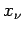
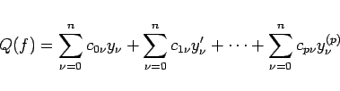
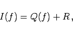

Die numerische Auswertung des bestimmten Integrals
muß näherungsweise erfolgen, wenn der Integrand f(x) sich nicht elementar integrieren läßt, sehr kompliziert ist oder nur an ausgewählten Stellen , den Stützstellen, aus dem Integrationsintervall [a,b] bekannt ist. Zur genäherten Berechnung von (19.69) werden sogenannte Quadraturformeln benutzt. Sie haben die allgemeine Form
|  | (19.70) |
mit
|  | (19.71) |
wobei R der Quadraturformelfehler ist. Die Anwendung von Quadraturformeln setzt voraus, daß die benötigten Werte des Integranden f(x) und seiner Ableitungen an den Stützstellen als numerische Werte verfügbar sind. Formeln, die nur Funktionswerte benutzen, heißen Mittelwertformeln. Formeln, die auch Ableitungswerte enthalten, nennt man HERMITEsche Quadraturformeln.